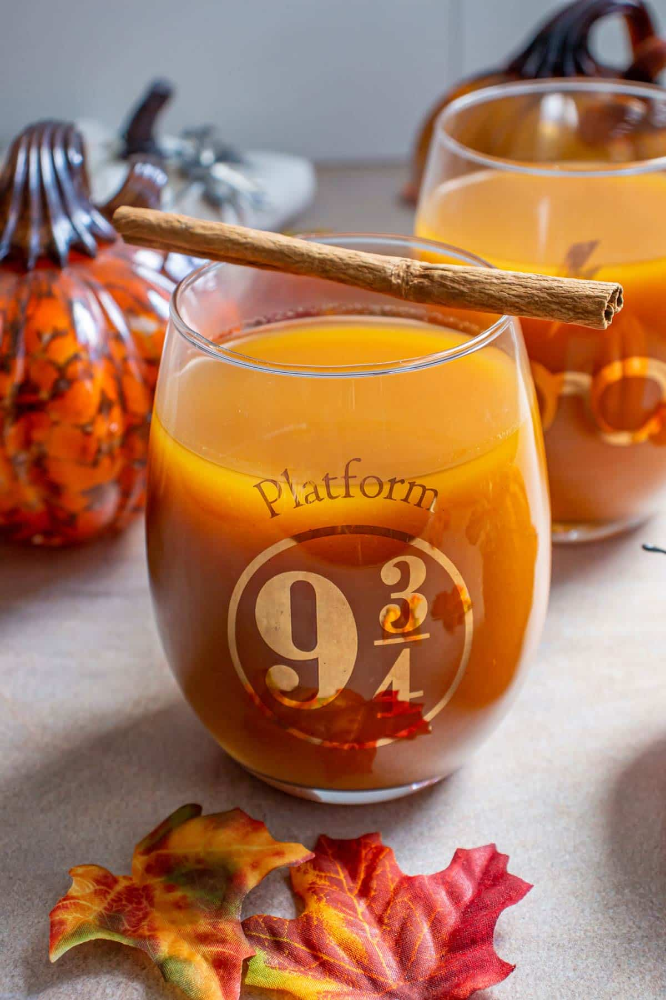
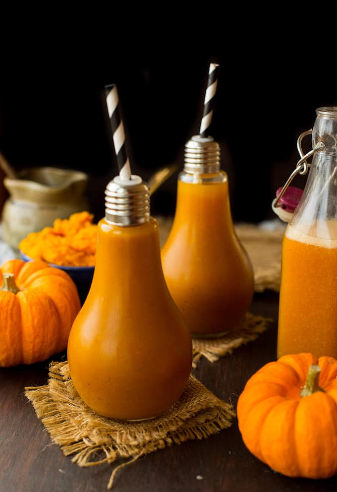
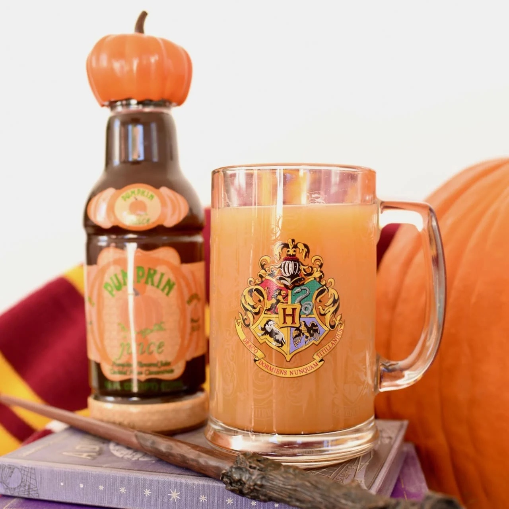
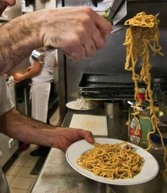
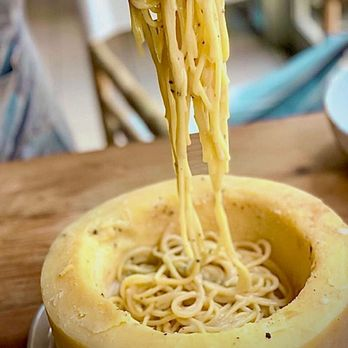
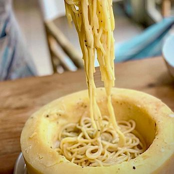
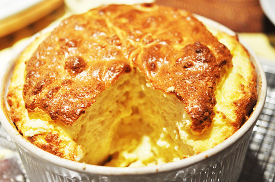

Pumpkin Juice from Harry Potter
Origin:The Wizarding World of Harry Potter, Universal Studios, Florida, U.S. Source: Mission Food Adventure Website Category: Drink Pumpkin Juice is a famous drink mentioned in the Harry Potter movies, so if this is up your alley, make sure to try it!
Source of Recipe:Recipe Ingredients
- Apple Juice
- Pumpkin Puree
- Apricot Nectar
- 1 teaspoon Pumpkin Pie Spice
- If you don't have pumpkin pie spice: cinnamon, ginger, cloves, allspice, nutmeg
Recipe Steps
- Put all ingredients in a saucepan
- Bring the saucpan to medium heat, letting it simmer
- Lower the heat and let it simmer for around 10-15 minutes
- Remove from heat and you can either serve it warm or chilled
Additional Food images
 Cacio e Pepe from Eat Pray Love
Origin: Italy Source: Saveur Website Category: Pasta This recipe is inspired from the iconic Eat Pray Love film, which shows the lead Julia Roberts enjoying a plate of this pasta.
Source of Recipe:Recipe Ingredients
- Kosher salt, for taste
- 1 lb. pasta (Tonnarelli or Spaghetti)
- 4 tbsp. extra-virgin olive oil
- 2 tsp. black pepper (freshly cracked), for taste
- 1 cup Percorino Romano (finely grated)
- 3/4 cup Cacio de Roma (finely grated)
Recipe Steps
- Bring a pot of salted water to boil
- Add pasta and cook till al dente, which will take around 8-10 minutes
- Once completed, put aside 1 cup of pasta water and drain the pasta
- On a skillet, heat oil over medium heat till the pan is shimmering
- Add black pepper and let it cook for 1-2 minutes or until it is fragrant
- Put 3/4 cup of pasta water into the skillet and let it boil
- Transfer the pasta to the skillet
- Sprinkle 3/4 cup of Pecorino Romaon and 3/4 cup of Cacio de Roma on the pasta
- Toss the pasta until it has a creamy texture and clings to the pasta for around 2 minutes
- To serve, you can sprinkle Pecorino and pepper to your liking
Additional Food Images
 

Cheese Souffle from Beauty & the Beast
Origin: France, Beauty & the Beast Source: Hungry Forever Website Category: Baked Good Cheese Souffle is a great dish to have at any time of the day.
Source of Recipe:Recipe Ingredients
- 6 tbsp unsalted butter
- 6 tbsp all purpose flour
- 2 cups cold whole milk
- 1/2 teaspoon salt
- 5 extra-large beaten eggs
- 2 1/3 cups grated Swiss Cheese or Gruyere
- 3 tbsp fresh chive blades (minced)
Recipe Steps
- Make sure the oven is preheated to 400 degrees F
- Melt 6 tbsp of butter on a pot over medium heat and then add flour. Stir the mixture and let it cook a rund a minute
- Add 2 tbsp of milk at a time. The consistency should be a thick, smooth sauce
- Remove the sauce from the heat and add salt and pepper. Adjust according to your liking
- Add eggs, cheese, chives to the sauce and mix well
- Pour mixture into a dish and let it bake for 30-40 minutes
- Serve it immediately from the oven